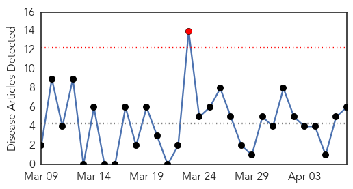
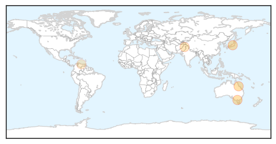
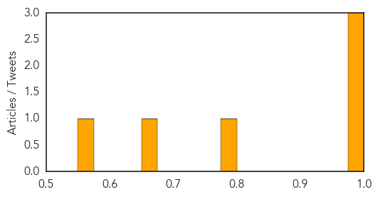
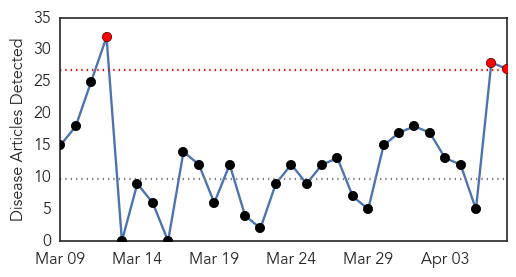
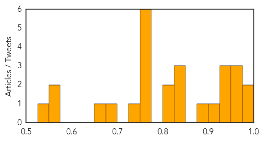

Dengue Fever
30-Day Web Trend
1 alerts, 0 warnings

30-Day Twitter Trend
1 alerts, 0 warnings

Article Locations
Article Confidences
Top Articles:
- 0.991
- Climate linked to mozzie movements
- 0.988
- 5 suspected cases of JE reported in city
- 0.981
- Australian scientists discover unique way to prevent dengue fever[1]- Chinadaily.com.cn
- 0.778
- CDA chief directs formations to take preventive measures against dengue
- 0.663
- New class of insecticides offers safer, more targeted mosquito control
- 0.572
- Venezuela health crisis grows with emigration of 13,000 doctors
Top Tweets:
-
No tweets found for Apr 07, 2015
Influenza
30-Day Web Trend
3 alerts, 0 warnings

30-Day Twitter Trend
0 alerts, 0 warnings

Article Locations

Article Confidences
Top Articles:
- 0.982
- Minnesota Turkey Farms Report Bird Flu Cases
- 0.978
- ‘Women key to family health’
- 0.965
- Dog Owners Warned About Surge in Canine Flu Cases
- 0.965
- Dog Owners Warned About Surge in Canine Flu Cases
- 0.960
- E Singhbhum plans to focus on hygiene to check JE spread
- 0.940
- Wild waterfowl may be bird flu source
- 0.938
- Flu vaccinations delayed
- 0.932
- Canine flu outbreak isolated to Chicago-area
- 0.919
- In fight against avian flu, state looks for diseased birds
- 0.890
- Local dog owners encouraged to protect pets from canine flu
- 0.844
- Over 1,000 Dogs Sickened With Outbreak
- 0.834
- dog flu puts owners on alert on the north shore
- 0.826
- Bird flu spreads to Minnesota's Kandiyohi County
- 0.825
- Multi-county drill to train organizations on handling outbreak s - KLTV.com-Tyler, Longview, Jacksonville, Texas
- 0.801
- Bird Flu Confirmed on Ontario Poultry Farm
- 0.772
- Rare canine flu outbreak hits Chicago, leaving five dogs dead, sickening more than 1,000 others
- 0.751
- April 7, 2015 Archives
- 0.751
- April 6, 2015 Archives
- 0.751
- April 6, 2015 Archives
- 0.751
- April 6, 2015 Archives
- 0.751
- April 6, 2015 Archives
- 0.735
- KDA lifts poultry movement restrictions in eastern Kansas
- 0.688
- Veterinarians Warn of Near-Epidemic Dog Flu in Chicago
- 0.660
- Bird flu war intensifies
- 0.572
- Avian flu confirmed in Canada
- 0.557
- Plainfield Park District advises caution at dog parks due to canine flu
- 0.545
- Drug-resistant superbug outbreak could kill 80,000
Top Tweets:
-
No tweets found for Apr 07, 2015